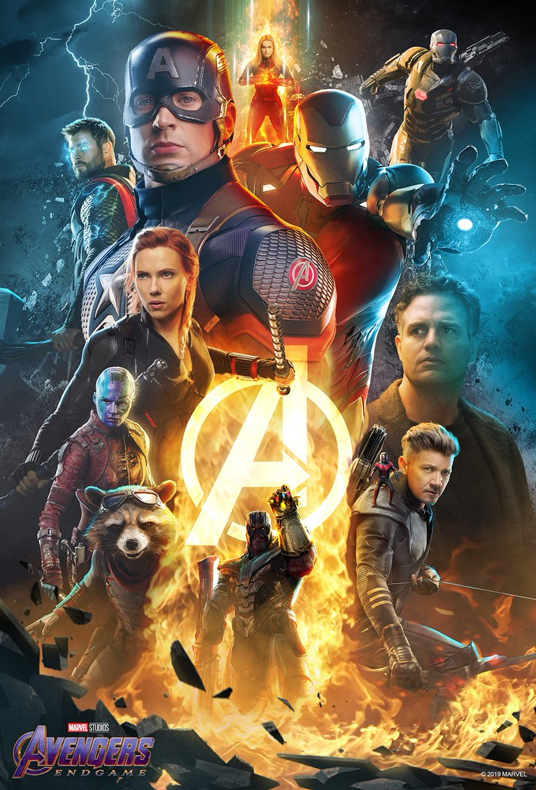

Sinopse
• Após Thanos eliminar metade das criaturas vivas de todo o universo,
os heróis sobreviventes precisam lidar com a dor da perda de amigos e seus entes queridos. Com Tony
Stark vagando perdido no espaço sem água nem comida,
Steve Rogers e Natasha Romanov precisam liderar a resistência contra o titã.
•Deixando os spoilers de lado, é sabido que Guerra Infinita terminou deixando um gosto amargo junto aos
fãs,
com a vitória declarada de Thanos e a execuçÃo do plano deste que, num estalar de dedos, acabou com a
vida
de 50% de toda a população do universo – e entre estes, muitos conhecidos foram igualmente eliminados,
como
Homem-Aranha, Pantera Negra e quase todos os Guardiões da Galáxia, apenas para citarmos alguns dos mais
populares. Filmado simultaneamente com o episódio anterior, era de se esperar que Ultimato fosse uma
sequência direta desses acontecimentos. Pois bem, o filme dirigido por Anthony e Joe Russo é exatamente
isso
– e também muito mais. Para se ter uma ideia, a trama de mais de 3 horas de duração meio que resolve os
eventos ocorridos um ano antes em uma vingança que leva menos de meia hora para ser executada. Os
sobreviventes – não por acaso, todos os Vingadores originais (Homem de Ferro, CapitÃo América, Thor,
Hulk,
Viúva Negra e Gavião Arqueiro, além da Capitã Marvel, que vem de uma outra galáxia para contribuir de
forma
decisiva) – estão com a alma limpa, ainda que muitos sigam sem saber como lidar com tudo que perderam
(ou
foram obrigados a abrir mÃo). De um jeito ou de outro, precisam seguir com suas vidas.

Endgame
•sÃo mais de 180 minutos para chegar-se até o aguardado ‘the end’. Se grande parte da trama é vital
para uma melhor compreensão dos acontecimentos e entendimento do que move grande parte dos
personagens, cerca de um terço poderia ter sido eliminado na sala de ediçÃo sem que se sentisse
falta no corte final. Porém, estão em cena, e se não para a melhor fruição da narrativa, ao menos
atendem a um propósito bem definido: agradar aos fiéis seguidores que na última década fizeram da
saga Marvel a mais lucrativa de todos os tempos.
•Assim como foi em Soldado Invernal e em CapitÃo América: Guerra Civil (2016), Anthony e Joe Russo deixam
claro em Vingadores: Ultimato que a figura com o qual mais se preocupam – e, portanto, que mais recebe
atenção por parte dos realizadores – é o Capitão América. E Chris Evans responde bem a esse destaque na
maior parte do tempo. Porém, seria demais lhe exigir o mesmo carisma percebido em Robert Downey Jr., que
literalmente rouba a cena a capa aparição de Tony Stark/Homem de Ferro. Até aí, nenhuma novidade. O que
surpreende é ver como Mark Ruffalo, finalmente, se revela confortável sob o manto do Hulk, ao passo que
Chris Hemsworth confirma ter mais prazer em fazer do Thor um fanfarrão, assim como foi em Thor: Ragnarok
(2017). Entre os outros, praticamente TODOS os atores e atrizes que já desfilaram pelo UCM dÃo novamente
às
caras, desde participações pontuais – e relevantes – como as de Robert Redford e Rene Russo, até outras
que
apenas surgem para compor o cenário, sem sequer abrir a boca (entre essas, Michelle Pfeiffer a Samuel L.
Jackson, passando por Marisa Tomei e William Hurt, entre tantos outros). E, claro, temos Josh Brolin,
mais
uma vez fazendo de Thanos o cara que todos amam odiar – e do qual mais se sentirá falta. É uma
montanha-russa? Com certeza. E essa é justamente a proposta. Alguns irão amar do início ao fim, outros
passarÃo mal e ficarão enjoados. A maioria, no entanto, ficará entre um extremo e outro. E no final, ao
menos tem-se o saldo de que, enfim, é chegada a hora de um ‘avante Vingadores!’. Independente da
amplitude
de significados que tal expressão.
•Os filmes dos Vingadores da Marvel sÃo uma das maiores sagas do universo cinematográfico da Marvel,
que reúne
alguns dos super-heróis mais populares dos quadrinhos em uma luta épica contra as forças do mal. Ao
longo de
três filmes, os Vingadores se unem para proteger a Terra e a galáxia contra as ameaças mais
perigosas que já
enfrentaram.
•O primeiro filme dos Vingadores foi lançado em 2012 e dirigido por Joss Whedon. O enredo envolve a
equipe
reunindo-se pela primeira vez para enfrentar Loki, o meio-irmão de Thor, que está determinado a
dominar o mundo.
O filme conta com um elenco impressionante, incluindo Robert Downey Jr. como Tony Stark / Homem de
Ferro , Chris
Evans como Steve Rogers / Capitão América , Chris Hemsworth como Thor, Scarlett Johansson como
Natasha Romanoff /
Viúva Negra , Jeremy Renner como Clint Barton / GaviÃo Arqueiro e Mark Ruffalo como Bruce Banner /
Hulk . O filme
foi um sucesso de bilheteria e abriu caminho para os próximos filmes dos Vingadores.
•O segundo filme dos Vingadores, intitulado "Vingadores: Era de Ultron", foi lançado em 2015.
Dirigido novamente
por Joss Whedon, o filme conta a história dos Vingadores lutando contra Ultron, um programa de
inteligência
artificial criado por Tony Stark que se volta contra a humanidade. O filme apresenta novos
personagens, como os
irmãos gêmeos Maximoff, interpretados por Elizabeth Olsen e Aaron Taylor-Johnson, e também conta com
participações especiais de personagens como James Rhodes / Máquina de Combate e Visão, interpretado
por Paul
Bettany. "Vingadores: Era de Ultron" foi outro sucesso de bilheteria e levou os Vingadores a um novo
nível de
perigo e desafio.
•O terceiro e último filme dos Vingadores foi "Vingadores: Guerra Infinita", lançado em 2018 e
dirigido pelos
irmãos Russo. O filme reúne os Vingadores para enfrentar o maior vilão que já enfrentaram: Thanos,
um titã que
busca reunir todas as seis Joias do Infinito para destruir metade da vida no universo. O filme
apresenta um
grande número de personagens do Universo Cinematográfico da Marvel, incluindo os Guardiões da
Galáxia, Doutor
Estranho e Pantera Negra, entre outros. "Vingadores: Guerra Infinita" foi um grande sucesso de
bilheteria e
deixou os fãs com um grande suspense sobre o que aconteceria no próximo filme.
•Em conclusÃo, os filmes dos Vingadores da Marvel são uma saga emocionante que reúne alguns dos
super-heróis mais
populares do universo dos quadrinhos. Com enredos emocionantes, cenas de ação épicas e um elenco
impressionante,
esses filmes se tornaram clássicos instantâneos e garantiram um lugar no coração dos fãs da Marvel
em todo o
mundo.
Curisosidades
Despedida
A única despedida certa em Ulitimato é de Stan Lee. O grande quadrinista da Marvel, criador de vários
dos personagens da história nas HQs, morreu em novembro de 2018. Conhecido por ter uma participação em
todos os filmes com perso.
Mistério
A maioria esmagadora de atores escalados para Ultimato já teve seus personagens apresentados em filmes
anteriores. Há, porém, algumas exceções que chamam a atenção.
Recorde de Personagens
Mais de 30 personagens do filme possuem grande destaque, como os membros de Guardiões da Galáxia ou
cidadãos de Wakanda (Pantera Negra).
Recordes no Youtube
Por falar em recorde, o trailer do filme bateu o de mais rápido a atingir um milhão de likes na
plataforma - em menos de quatro horas. A primeira prévia do filme teve mais de 289 milhões de
visualizações nas primeiras 24 horas no Youtube.